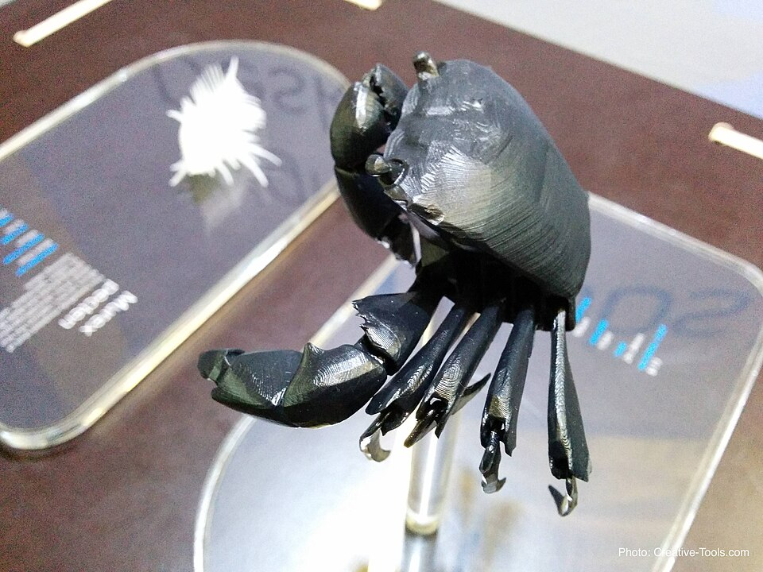
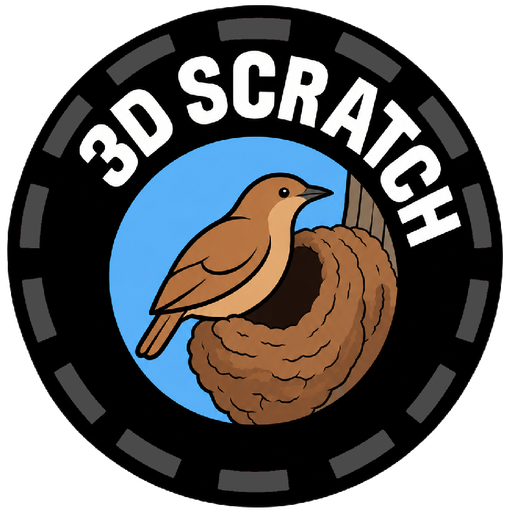
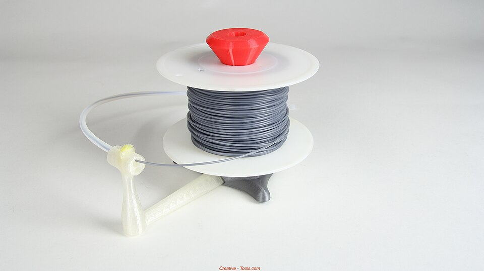

Figura decorativa impresa en 3D
Una pieza curiosa que muestra otra posibilidad de la impresión 3D: crear figuras para decorar o coleccionar.
- Figura de cangrejo

3DSCRACTH MenúIdeas para impresión 3D
Una colección de ejemplos para imaginar qué tipos de objetos se pueden diseñar e imprimir en 3D, desde detalles cotidianos hasta piezas prácticas.
Proyecto escolar: 3DScracth y sus servicios son ficticios; no es un negocio real. Las fotos muestran impresiones reales y son ejemplos, no productos disponibles.
Objetos curiosos y decorativos: impresiones que se pueden mirar, coleccionar o usar como adorno.

Una pieza curiosa que muestra otra posibilidad de la impresión 3D: crear figuras para decorar o coleccionar.
Accesorios funcionales impresos en 3D, como soportes y piezas de organización.

Una pieza funcional que sostiene el rollo y ayuda a guiar el filamento mientras se imprime.